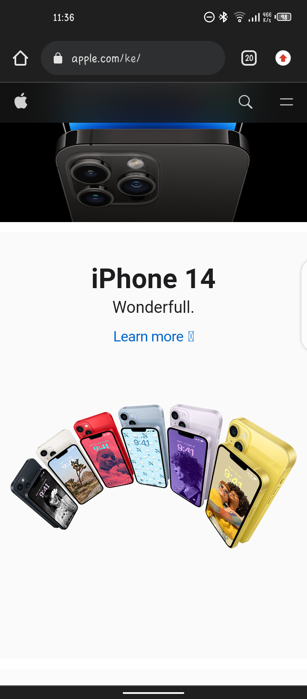

Visual Hierarchy
Description: Visual hierarchy is the method of arranging graphic elements by order of importance. As from the image above is an example of linkedin page and it illustrates perfectly visual hierarchy, the main image is larger than supporting text.
Hick's Law
Chegg
Description: Hick's Law (or the Hick-Hyman Law) states that the more stimuli (or choices) users face, the longer it will take them to make a decision. As from the image above is a student payment process through Hick's Law the student has multiple options at once.
White Space and Clean Design
Apple
Description: White space promotes visual hierarchy and helps users easily find the information they are looking for. As from the image above apple's white space lets the products take center stage.